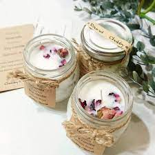
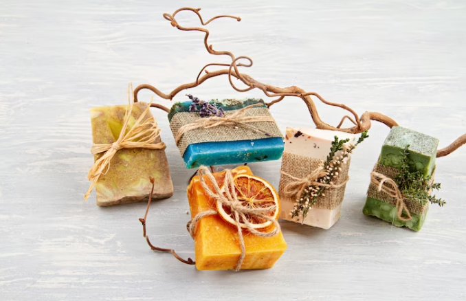
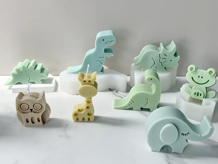
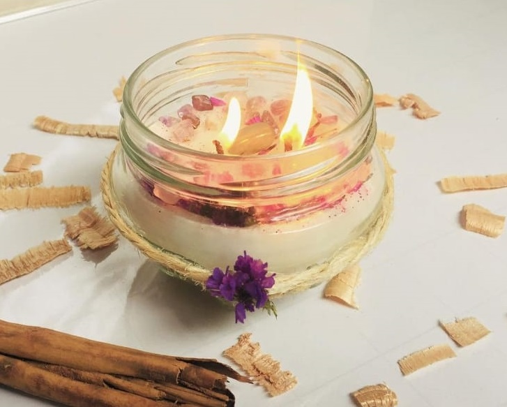

Nuestra pasión por lo artesanal va más allá
de la estética: Nuestro enfoque en el apoyo
sostenible no solo nutre el presente,
sino que también cultiva un futuro
más sostenible para las generaciones venideras.
Utilizamos cera de soja, una elección consciente que no solo
produce una llama más limpia y duradera, sino que también apoya la industria agrícola sostenible.
La cera de soja es biodegradable y renovable, un pequeño gesto que
aporta un gran impacto en la preservación de nuestro entorno.




Ver más
Cada vela que creamos es moldeada con cariño y atención, dando vida a una experiencia que trasciende lo ordinario.